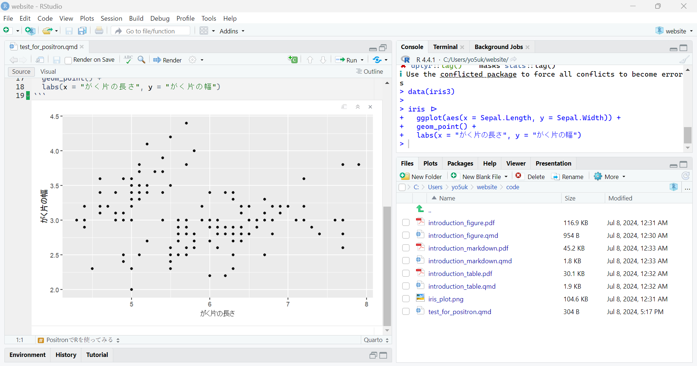

Positron…?
先日後輩に教えられて「Positron」なるものの存在を知りました。
どうやら RStudio に次ぐ IDE（統合開発環境）のようで、R には RStudio しか勝たんだろうと思っていた僕としては少し驚きました。
というのも、VSCode での R 操作も試していたことがあり、その際に不便を感じることが多かったからです。特にキーボードショートカットで、は万能な VSCode であるがゆえに他の言語や機能と干渉してしまい、設定も面倒でした。その後は開発コンテナを使用している場合も RStudio Server を使用してきました。
しかし今度は RStudio を提供する Posit 社が直々に新たな IDE を提供してきたと聞いて、大変興味を惹かれさっそくインストールすることにしました。
とりあえず、R と Python のどちらとも親和性が高いことが売りみたいです！
インストール！
まだ正式リリースはされていないようです。
GitHub からリリースページに飛んでインストールをしてみます。ここからインストールできます。
インストールに難しいことはなく、サクサクと進みました。
開いてみる
画面はこんな感じです。

これを開くまで知らなかったのですが、これは VSCode をフォークして作られているっぽいですね。
VSCode での R に挫折した僕としては、少し不穏なスタートです😅
コードを実行してみる
試しに ggplot2::ggplot() を使ってプロットしてみることにします。

うーん、現段階では課題が多そうですね。プレリリース版なので仕方なしです。
ショートカットが違う
VSCode ベースの時点でなんとなく察していましたが、いろいろと違います。設定の必要あり。
例えばチャンクの挿入は RStudio では
Ctrl+Alt+Iでしたが、Positron ではAltではなくShift。パイプも
Ctrl+Shift+Mでは入れられない。など…。
インライン出力未対応
RStudio ではコードの下に実行結果が出ていましたが、Positron では対応していないようです。
後で触れますが、今後対応していくみたい。
ggplot()で日本語を使うと文字化けする- RStudio では文字化けしないので、今後修正されるのかな？

レンダリングしてみる
ではレンダリング（R Markdown で言うところの Knit）してみます。

あれ、なんか普通に日本語出力できてますね…笑

でも PDF だといつも通り文字化けします。ここは YAML ヘッダーの設定で対応できそうです。
感想
今後の期待が高まる
現時点では VSCode の時の不便さを解消しきれておらず、まだ乗り換えられないなというのが正直なところです。
しかし、他ではコンソールで予測変換が使えるようになってて、それが結構いい感じです。install.packages() と書く時間が短縮できます(^^)（他にもっとないのか()）
次の課題を乗り越えてきたら、僕は Positron に移行するかもしれません。
インライン出力
- 実行結果がコードの下に出てほしいです。
拡張機能の充実
- 現時点では主要な拡張機能が使えません。Microsoft が提供する拡張機能は純正 VSCode でしか使えないようです。
リモート開発機能への対応
- Tips でも紹介している通り、開発コンテナを使用した環境構築をしているので、ここへの対応は必須です。
ちなみに、Posit 公式が言っているように、現在は多くの課題を抱えていて、データサイエンティストにとってすぐに最適なものになるとは考えていないようです。
また、今後のビジョンも示されており、上に挙げたような課題も克服されると思います。
これからのアップデートに期待しましょう！